ノード
ノードはエフェクトを作成するために必要な基本的な要素です。
様々なノードを組み合わせてつなぎあわせることで、多様なエフェクトを作成することが出来ます。
ノードとノードをつなげた状態のノード群をノードツリーと呼びます。
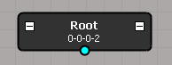
ポート
ノードには他のノードと接続するためにポートを持っています。
ポートは１つ（単数）、もしくは複数のノードと接続することが出来、ポートの色によってどちらか確認出来ます。
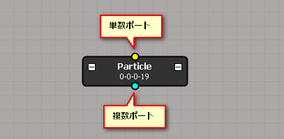
ポートは親ポート、子ポート、出力ポートがあります。親ポートと子ポートはノードの階層構造を構築するためのものです。
出力ポートは、あるノードが他のノードツリーを必要なときに使用します。
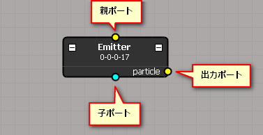
ノードの種類
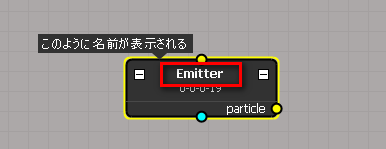
UUID
ノード固有の値です。
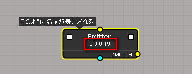
名前
任意にノードの名前を設定できます。
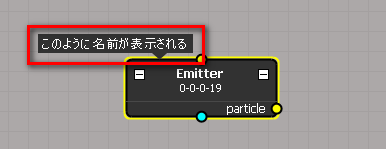
折り畳み（出力ポート）
ノードを折り畳みます。折り畳むと出力ポートが表示されなくなります。
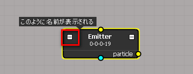
折り畳み（出力ノード）
出力ポートにつながっているノードを折り畳みます。
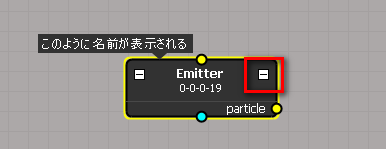
折り畳まれたノード
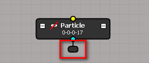
非表示
ノードが非表示のとき、そのノード以下がすべてシーンに表示されなくなります。
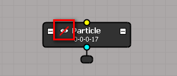
バイパス
ノードがバイパス状態のとき、そのノードは表示されず、また、そのノードの影響が子に反映されません。（ノードの親の影響を子が受けるようになります。）
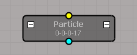
ノードの種類
ノードには様々な種類がありますが、大きく分けて以下のようなノードがあります。
- ルートノード
- エミッタノード
- パーティクルノード
- モディファイアノード
- フィールドノード
ルートノード
１つのエフェクトに、１つのルートノードが存在します。
エフェクトはルートノードから、ノードを辿って処理します。
ルートノードにつながっていないノードは処理されません。
エミッタノード
パーティクルなどのプリミティブを生成するノードです。
例) Emitter, Stripe
パーティクルノード
パーティクルをシーンに表示するノードです。
モディファイアノード
他のノードに影響するノードです。
モディファイアノードの変化は蓄積され、子ノードに影響します。
例) Transform, Translate, Rotate, Scale, Size, Color
フィールドノード
他のノードに影響するノードです。フィールドノードはモディファイアの一種です。
フィールドノードは、他のノードの位置情報にだけ影響します。
例) Gravity, Wind, Radial